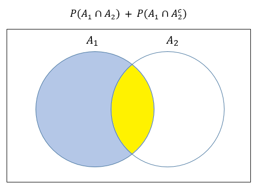
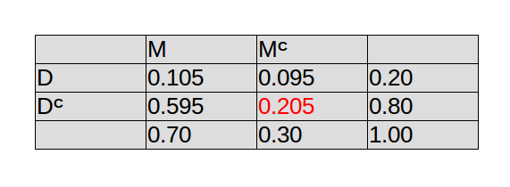

Solución Tarea # 5
1. (5 pts) Sean \(A_1\) y \(A_2\) eventos del mismo espacio muestral \(S\). Digamos que \(P(A_1 \cup A_2)= 0.5\) y \(P(A_1 \cup A^c_{2})= 0.8\)
Encuentre \(P(A_1)\)
—–Solución—–
Sabemos que \(P(A_1 \cup A_2)= 0.5\) y \(P(A_1 \cup A^c_{2})= 0.8\), entonces
\[0.5 = P(A_1) + P(A_2) - P(A_1 \cap A_2) \quad (1)\]
\[0.8 = P(A_1) + P(A^c_2) - P(A_1 \cap A^c_2) \quad (2)\]
Sumando las ecuaciones \((1)\) y \((2)\) obtenemos:
\[1.3 = 2P(A_1) + P(A_2) + P(A^c_2) - \big[P(A_1 \cap A_2) + P(A_1 \cap A^c_2) \big]\]
Por propiedades de probabilidad sabemos que \(P(A_2) + P(A^c_2) = 1\).
Ahora, mediante un diagram de Venn podemos darnos cuenta que \(P(A_1 \cap A_2) + P(A_1 \cap A^c_2) = P(A_1)\).

Entonces,
\[1.3 = 2P(A_1) + 1 - P(A_1)\]
\[P(A_1) = 0.3\]
2. (5 pts) Sean \(A\) y \(B\) eventos de un espacio muestral \(S\). Tenemos que \(P(A^c) = \dfrac{1}{2}\) y \(P(B) = \dfrac{3}{4}\). ¿Pueden ser \(A\) y \(B\) eventos mutuamente excluyentes?. Justifique su respuesta matemáticamente.
—–Solución—–
Supongamos que \(A\) y \(B\) son eventos mutuamente excluyentes, entonces se cumple que:
\[P(A \cap B) = 0,\]
por lo tanto,
\[P(A \cup B) = P(A) + P(B) - 0\]
\[P(A \cup B) = \frac{1}{2} + \frac{3}{4} = \frac{5}{4} > 1 \quad \text{(Contradicción!)}\]
Llegamos a una contradicción, dado que una probabilidad no puede ser mayor que 1. Por lo tanto, \(A\) y \(B\) no pueden ser eventos mutuamente excluyentes.
3. (10 pts) En una clase de estadística hay 10 estudiantes, de los cuales 4 son hombres y 6 son mujeres. En otra clase, esta vez de matemáticas, hay 16 estudiantes hombres y una cantidad desconocida de estudiantes de género femenino. Si se elige al azar un estudiante de cada clase (dos en total) y si sabemos que 0.44 es la probabilidad de que ambos estudiantes sean del mismo género.
Calcule el número de estudiantes de género femenino en la clase de matemáticas.
—–Solución—–
Definamos los siguientes eventos:
\(F_e\) = “Estudiantes mujeres en la clase de estadística”.
\(M_e\) = “Estudiantes hombres en la clase de estadística”.
\(F_m\) = “Estudiantes mujeres en la clase de matemáticas”.
\(M_m\) = “Estudiantes hombres en la clase de matemáticas”.
Sabemos que \(0.44\) es la probabilidad de seleccionar los dos estudiantes del mismo género independientemente de la clase. Esto se traduce en:
\[0.44 = P\big[(F_e \cap F_m) \cup (M_e \cap M_m)\big]=\]
\[P(F_e \cap F_m) + P(M_e \cap M_m)=\]
\[P(F_e)*P(F_m) + P(M_e)*P(M_m),\]
luego,
\[0.44 =\frac{6}{10}*\frac{x}{16 + x} + \frac{4}{10}*\frac{16}{16 + x}\]
\[0.44 =\frac{6x}{10(16 + x)} + \frac{64}{10(16 + x)}\]
\[0.44 =\frac{6x + 64}{10(16 + x)}\]
\[0.44*10(16 + x) = 6x + 64\]
\[70.4 + 4.4x = 6x + 64\]
\[1.6x = 6.4\]
\[x = 4\]
Entonces, en la clase de matemáticas hay 4 mujeres.
4. (5 pts) En cierta universidad,
Todos los estudiantes tienen al menos un auto.
El 70% de los estudiantes tienen más de un automóvil.
El 20% de los estudiantes tienen un automóvil deportivo.
De esos estudiantes que tienen más de un automóvil, el 15% tiene un automóvil deportivo.
Con la información anterior, calcule la probabilidad de que un estudiante seleccionado al azar tenga exactamente un automóvil y que NO sea deportivo.
—–Solución—–
Definamos los siguientes eventos:
M = “Estudiantes que tienen más de un automóvil”.
D = “Estudiantes que tienen un automóvil deportivo”.
Queremos encontrar \(P(M^c \cap D^c)\).
Entonces, según información del problema, tenemos:
\(P(M) = 0.70\)
\(P(D) = 0.20\)
También tenemos la probabilidad condicional \(P(D | M)=0.15\), por lo tanto, podemos usar la regla del producto:
\[P(D | M)= \frac{P(D \cap M)}{P(M)}\]
\[P(D \cap M)= P(D | M)P(M)\]
\[P(D \cap M)= 0.15*0.70\]
\[P(D \cap M)= 0.105.\]
Ahora podemos usar una tabla como ayuda para resolver el problema.

Entonces, \(P(M^c \cap D^c) = 0.205\)
Así, la probabilidad de seleccionar un estudiante al azar que tenga solo un carro y que no sea deportivo es \(0.205\).